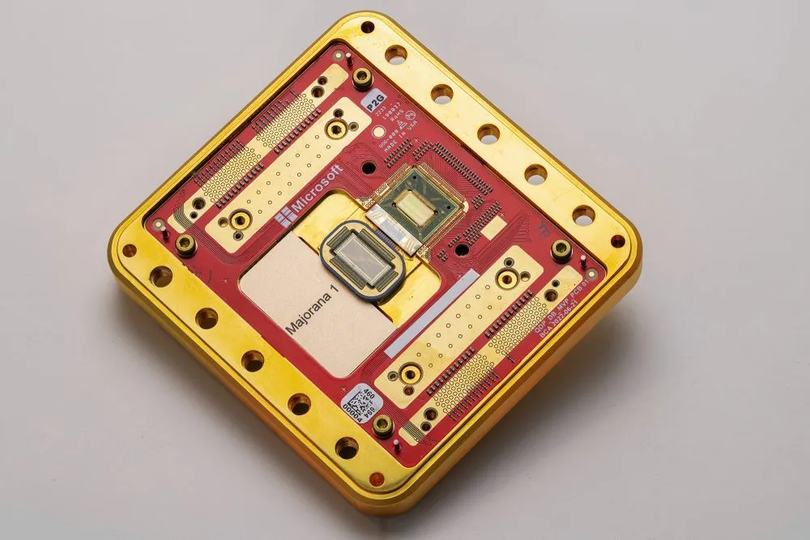

Lansări noi

Majorana-1
Cercetătorii de la Microsoft au anunțat crearea primilor „qubiți topologici” într-un dispozitiv care stochează informații într-o stare exotică a materiei, în ceea ce ar putea fi o descoperire semnificativă pentru calculul cuantic.
Microsoft a adoptat o abordare foarte diferită pentru a-și construi „qubiții topologici”. Ei au folosit ceea ce se numesc particule de Majorana, teoretizate pentru prima dată în 1937 de către fizicianul italian Ettore Majorana.

Edge AI
Inteligența artificială Edge se referă la implementarea algoritmilor AI și a modelelor AI direct pe dispozitive de periferie locale, cum ar fi senzori sau dispozitive Internet of Things (IoT), care permite procesarea și analiza în timp real a datelor fără a se baza constant pe infrastructura cloud.
Simplu spus, edge AI sau „AI on the edge“ se referă la combinația de edge computing și inteligență artificială pentru a executa sarcini de învățare automată direct pe dispozitive edge interconectate.

Jetson nano
Modulul Jetson Nano este un mic computer AI care vă oferă performanța și eficiența energetică pentru a prelua sarcinile de lucru moderne de AI, a rula mai multe rețele neuronale în paralel și a procesa date de la mai mulți senzori de înaltă rezoluție simultan.
Acest lucru îl face opțiunea de bază perfectă pentru a adăuga IA avansată la produsele încorporate.